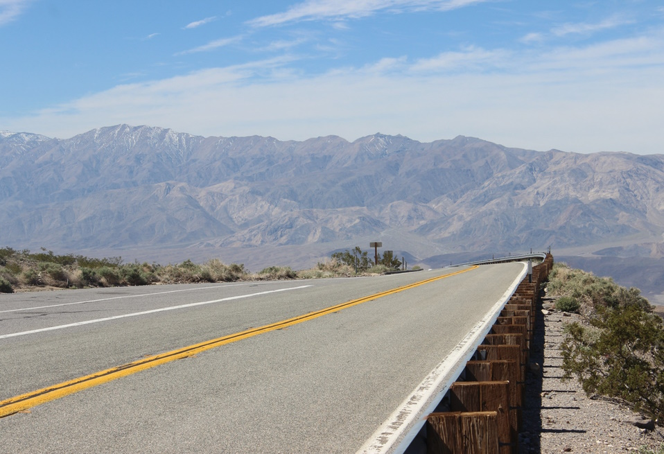

This website serves as my journal of reflections and observations throughout my traveling life. I also use it to house my book tracker since I started regularly reading again in 2025. You might also find some easter eggs and fun little things here or there. Aside from that, there is no real purpose of this website other than to make something that is a little deeper yet also tougher to find than content on major social media.
